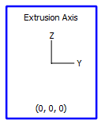
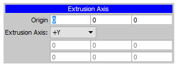

对象属性
有关如何编辑属性的一般说明，请参见对象属性概述（Object Properties in General）。
起点
位于左下角的起点，其深度和分组名称可在弹出式属性编辑器或“对象属性”控件组中编辑。
后续点
这些点既可以逐个选择，也可以成组选择。逐个选择时，可编辑“深度”属性以及分组名称。选择多个点时，只能编辑分组名称。
在未选择任何对象时，您可以按空格键显示弹出式属性编辑器，然后输入新点的坐标，即使新点超出当前挤出的末端也可以。
您可以使用鼠标指针将点拖动到新位置。
边
挤出的每个阶段都会显示一条边。选中某条边后，其长度、网格单元数量、比率和分组名称可在控制面板或弹出式属性编辑器中编辑。
当您更改网格单元数量或比率时，新的网格划分将通过挤出各阶段的竖直线表示出来。
比率的有效值范围为 0 到无穷大。默认值为 1。实际使用中，取值最好保持在 0.5 到 2 的范围内。
挤出轴

图 1：“挤出轴”控件
默认情况下，挤出的原点位于模型坐标的 0,0,0 处，并沿 y 轴正方向挤出。这些设置可以更改。为此，使用选择工具（ ）单击“挤出轴”控件将其选中。此时可通过控制面板或弹出式属性编辑器编辑挤出的方向和位置。若使用后者，将出现一个如下所示的窗口；相同的属性也会出现在控制面板中。
）单击“挤出轴”控件将其选中。此时可通过控制面板或弹出式属性编辑器编辑挤出的方向和位置。若使用后者，将出现一个如下所示的窗口；相同的属性也会出现在控制面板中。


更改原点的方法是在“原点”行上分别输入新的 x、y 或 z 坐标。改变挤出在模型空间中的方向，需要从六个基本轴方向（x、y 或 z 的正向或负向）中选择一个。选定其中之一后，原点的位置和所选方向就足以确定挤出的方向。
“挤出轴”选择器中还有最后一个用于确定挤出方向的选项，即“Extrude, X”选项。选中该选项时，需要在选择器下方指定两个附加数值。第一个标记为“Extrude”，它定义一个单位矢量，用以表达挤出方向。第二个数值标记为“X”，用于提供三维方向：它自身与“Extrude”单位矢量构成一个平面。定义这两个数值后，即隐含一个垂直于“Extrude, X”平面的“Extrude, Y”单位矢量；FLAC3D 由此定义“Extrude Plane X-Extrude Plane Y”平面。此时模型的方向被设定为：该平面与构建视图所在的平面（即承载挤出“面”的平面）重合。最后，生成网格时挤出方向将垂直于“Extrude Plane X-Extrude Plane Y”平面，即使最初提供的“Extrude”单位矢量未必垂直也是如此。此调整在执行挤出时自动完成。
| 这些内容对您有帮助吗？… 版权与免责声明 | FLAC3D © 2019, Itasca | 原文更新于 2020 年 10 月 8 日 |